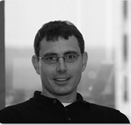
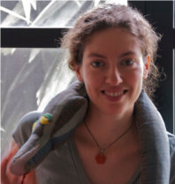
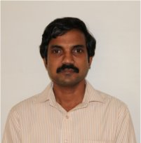
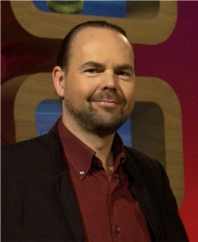
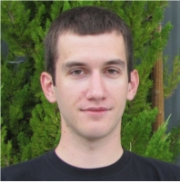
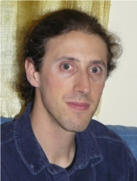

Speakers

Eric Jones - Keynote Speaker
Eric has a broad background in engineering and software development and leads Enthought's product engineering and software design. Prior to co-founding Enthought, Eric worked with numerical electromagnetics and genetic optimization in the Department of Electrical Engineering at Duke University. He has taught numerous courses on the use of Python for scientific computing and serves as a member of the Python Software Foundation. He holds M.S. and Ph.D. degrees from Duke University in electrical engineering and a B.S.E. in mechanical engineering from Baylor University. Eric was the Keynote Speaker at SciPy US 2011.
Emmanuelle Gouillart
Emmanuelle Gouillart is a physics researcher in a joint laboratory between the French National Research Center (CNRS), and the French industry group Saint-Gobain. Her research interests are in glass melting, tomography imaging, and fluid mixing. She started teaching Scientific Python during the Python African Tour event in Dakar in 2009, and was one of the organizers of the Euroscipy conferences in Paris in 2010 and 2011. Emmanuelle is now one of the developers of the Python module scikits-image.
Ajith Kumar
His main area of work is development of instrumentation for particle accelerators and associated experiments, including radio-frequency accelerating structures, control and data acquisition systems, digital and radio frequency electronics modules. Also involved in developing laboratory equipment (expeyes.in) for teaching physics and engineering following the philosophy of Free Software. Has been a user and propagator of Free Software in the field of education for several years.
Jarrod Millman
He is on the SciPy steering committee and an active contributor to both the NumPy and SciPy projects. He is the acting managing director and the director of computing for UC Berkeley's Neuroscience Institute, where he helped found the Neuroimaging in Python (NIPY) project.
Ole Nielsen
Ole Nielsen has been an Open Source adopter, promotor and developer since the early nineties during his career as technical consultant, academic researcher, government scientist and development professional within an aid organisation. Ole has a double Master's degree in Mathematics and Computer Science as well as a PhD in scientific computing from universities in Denmark. Ole joined AusAID in Jakarta in 2010 to support the Indonesian government in multi-hazard disaster risk reduction.
Mateusz Paprocki
Mateusz Paprocki is a software developer and a researcher in the field of computer science. He graduated last spring from Technical University of Wroclaw in Poland. Mateusz is an active Open Source Python scientific software developer. His major contribution to the community is his work on SymPy, a pure Python symbolic mathematics system.
Asokan Pichai
Mr. Asokan Pichai is the consultant/project manager for the Python group of the FOSSEE project. He is also the principal consultant at TalentSprint. He has immense experience in the field of training and instructional design. He has been a director at CIBS and has been the CEO/CTO of various firms such as MinVesta Infotech Ltd., Arkin Systems and Future Focus Infotech.
Prabhu Ramachandran
Dr Prabhu has been a faculty member at the department of Aerospace Engineering, IIT Bombay since 2005. He has a PhD in Aerospace Engineering from IIT Madras. His research interests are primarily in particle methods and applied scientific computing. He has been active in the FOSS community for more than a decade. He co-founded the Indian Linux User Group - Chennai (ILUGC) in 1998 and is the creator and lead developer of the (FOSS-India-award-winning) Mayavi and TVTK Python packages. Prabhu has contributed to the Python wrappers of the Visualization Toolkit (VTK). He is an active member of the SciPy community and a member of the Python Software Foundation (PSF). In 2009, he gave the keynote address at India's first PyCon. Prabhu currently heads the FOSSEE project (http://fossee.in) which aims to spread the use of Python (and other Free Software) in the curriculum.